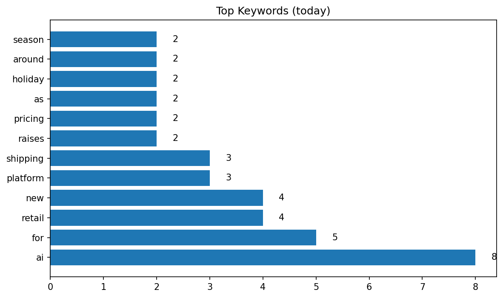

Retail Trends – Dashboard
Last updated 2025-10-02 13:00 UTC
Daily Summary
On 2025-10-02, 30 retail articles were tracked. Amazon appeared in 2 headlines. Other top trends are reflected in the keyword and brand charts.
Top Keywords (Today)
Brand Mentions (Today)

Top Keywords (7-day)
Brand Mentions (7-day)
Latest Headlines
- Top retail conferences in 2026
- At Home set to emerge from bankruptcy with most of its stores
- Peloton raises membership pricing ahead of holidays
- Nike CEO touts ‘tangible progress’ as revenue rises 1% in Q1
- More than a quarter of consumers plan to cut holiday spending
- Target plots retail, marketing blitz around ‘Stranger Things’ final season
- Pinterest mobilizes Gen Z searchers, retail media with new ad offerings
- Journeys owner shuffles brands, leadership
- Stanley launches take-back program
- ChatGPT lets shoppers buy products within the platform
- Major ports so far unscathed by Trump’s One Big Beautiful Bill Act
- Poshmark taps USPS Ground Advantage for lower shipping rates
- Section 232 probe reignites tariff uncertainty for medtech firms
- ‘Not a good sign.’ Weak demand continues amid tariff uncertainty: PMI
- Grocery Outlet names new supply chain leader